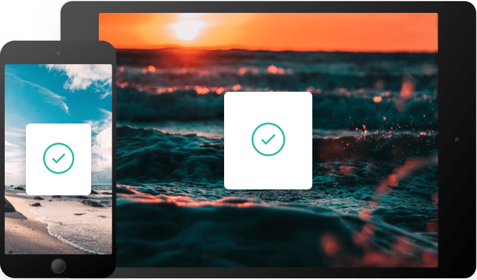

A history of everything you copy
Clipboard allows you to track and organize everything you copy. Instantly access your clipboard on all your devices.
Keep track of your snippets
Clipboard instantly stores any item you copy in the cloud, meaning you can access your snippets immediately on all your devices. Our Mac and iOS apps will help you organize everything.

Quick Search
Easily search your snippets by content, category, web address, application, and more.
iCloud Sync
Instantly saves and syncs snippets across all your devices.
Complete History
Retrieve any snippets from the first moment you started using the app.
Access Clipboard anywhere
Whether you’re on the go, or at your computer, you can access all your Clipboard snippets in a few simple clicks.
Supercharge your workflow
We’ve got the tools to boost your productivity.
Create blacklists
Ensure sensitive information never makes its way to your clipboard by excluding certain sources.
Plain text snippets
Remove unwanted formatting from copied text for a consistent look.
Sneak preview
Quick preview of all snippets on your Clipboard for easy access.
A list showing the logos of various companies that work with Clipboard.
Clipboard for iOS and Mac OS
Available for free on the App Store. Download for Mac or iOS, sync with iCloud and you’re ready to start adding to your clipboard.